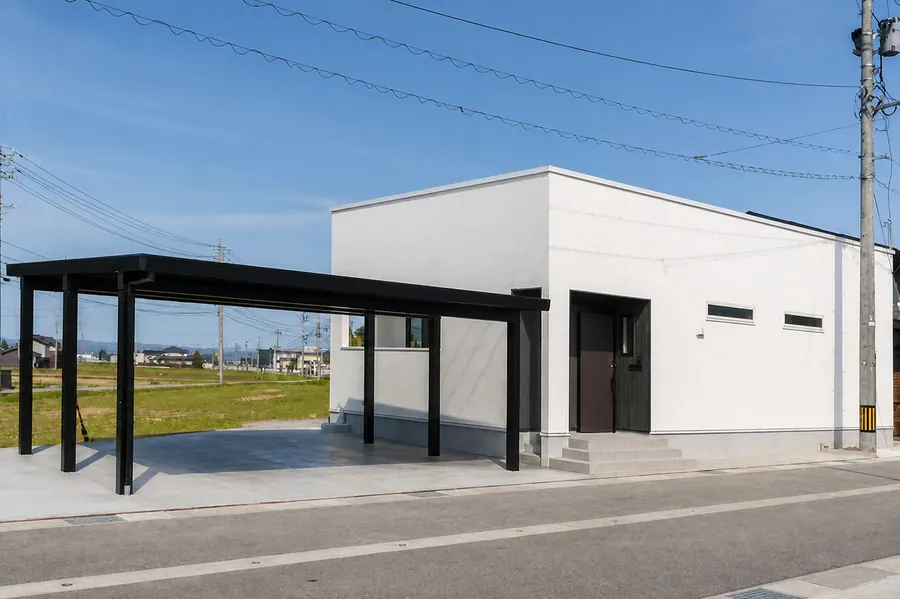
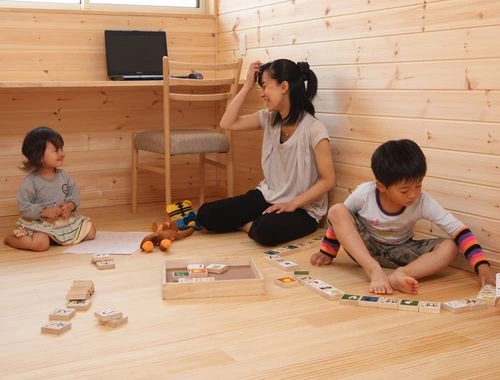
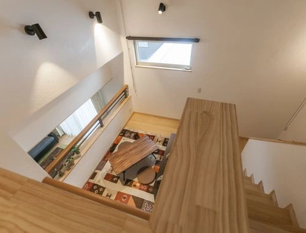
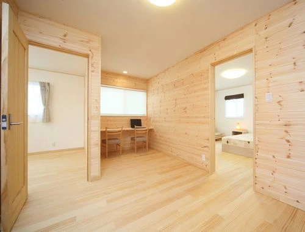

Healthyの家づくり
暮らしを支える、５つの特徴。
- 素材選びと室内環境を考える住まい
- 構造計画と耐震等級を確認する住まい
- 断熱・換気で室内環境を考える住まい
- 高性能設備搭載の省エネ住宅
- 保証内容・適用条件は契約前に確認

Healthyのポイント
無垢材と漆喰を生かす素材選び
材料の種類と使う場所を、仕様書で確かめます。
原サイトで紹介している乾燥無垢材、無垢床、漆喰壁などを、ご希望や使い方に合わせてご提案します。採用する材料や施工範囲は、商品・プランごとの仕様書で確認します。
素材の選択だけで病気の予防や健康状態の改善を保証するものではありません。室内環境は、断熱・換気・清掃・暮らし方なども合わせて考えます。
- 構造材
- 無垢構造材を使用します。
- 床材
- 無垢フローリングを使用します。
- 内装壁
- 漆喰の塗り壁を使用します。
- 断熱材
- セルロースファイバーを使用します。
- 建具
- 無垢材建具を使用します。
- 造作材
- 無垢造作材を使用します。
- 防蟻処理
- ホウ酸を使用します。

Healthyのポイント
耐震性を、資料で確認する
一棟ごとの構造計画と、等級の確認方法を説明します。
原サイトでは、木造軸組工法と面材による構造、制震ダンパー、構造計算書付きの耐震等級３を紹介しています。実際に採用する構造・部材・ダンパー、計算方法、取得する評価書等は、現在の商品仕様と個別プランで確認します。
等級３は、住宅性能表示制度の耐震等級１に対して1.5倍の地震力を想定する基準です。すべての災害で無被害となることや、すべての商品の等級３取得を保証する表示ではありません。

Healthyのポイント
断熱・窓・換気を一緒に考える
部屋ごとの温度差に配慮した設計を考えます。
原サイトでは、トリプルサッシ、高断熱玄関ドア、断熱材を組み合わせた住まいを紹介しています。窓の面積や方位、建物形状も断熱性能に影響するため、採用する断熱材・厚さ・窓仕様と、一棟ごとの外皮計算を確認します。
断熱性能や換気を考えることは、住まいの快適さを整える取り組みです。疾病の予防や医療上の効果を保証するものではありません。
家づくり無料相談
理想の暮らしを、お聞かせください。
暮らしのアンケートで、家族の理想の家づくりを発見。